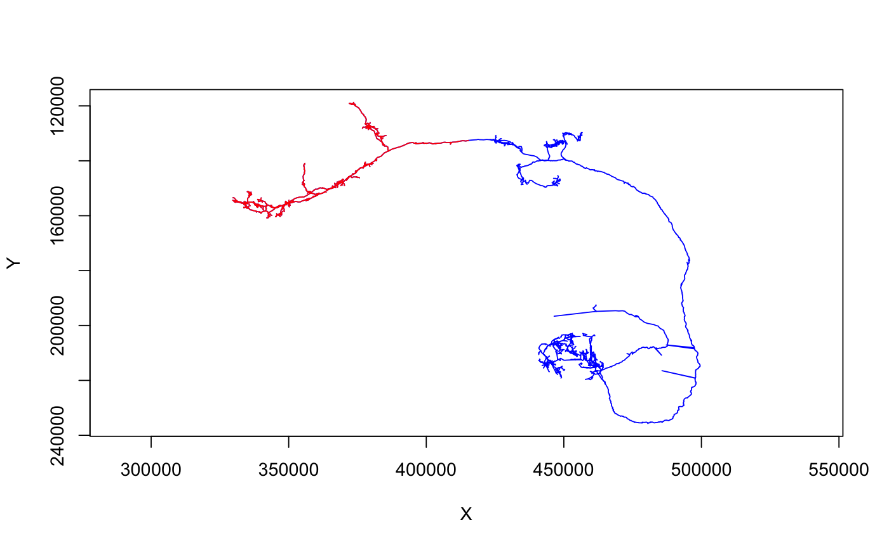

R/ngraph.R
Return indices of points in a neuron distal to a given node
distal_to(x, node.idx = NULL, node.pointno = NULL, root.idx = NULL, root.pointno = NULL)
| x | A neuron |
|---|---|
| node.idx, node.pointno | The id(s) of node(s) beyond which distal points
will be selected. |
| root.idx, root.pointno | The root node of the neuron for the purpose of
selection. You will rarely need to change this from the default value. See
|
Integer 1-based indices into the point array of points that are distal to the specified node(s) when traversing the neuron from the root to that node. Will be a vector one node is specified, a list otherwise
## Fetch a finished DL1 projection neuron finished_pns=catmaid_get_neuronnames('annotation:^LH_DONE') # should only be one neuron but pick first just in case dl1skid=names(grep('DL1', finished_pns, value = TRUE))[1] dl1=read.neuron.catmaid(dl1skid) ## subset to part of neuron distal to a tag "SCHLEGEL_LH" # nb distal_to can accept either the PointNo vertex id or raw index as a # pivot point dl1.lh=subset(dl1, distal_to(dl1,node.pointno = dl1$tags$SCHLEGEL_LH)) plot(dl1,col='blue', WithNodes = FALSE)plot(dl1.lh, col='red', WithNodes = FALSE, add=TRUE)